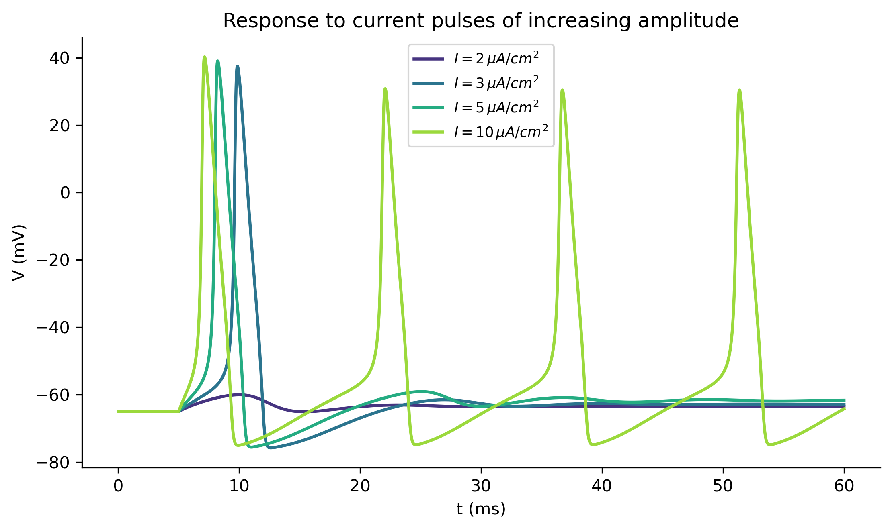
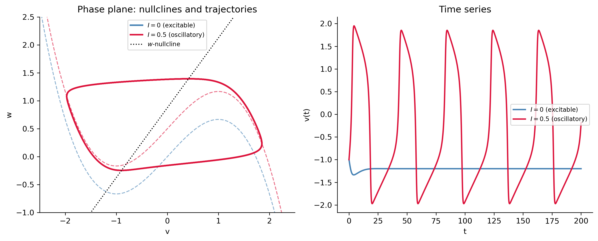

Nonlinear ODEs, Systems, and Numerical Methods in Electrophysiology
Show the code
import numpy as npimport sympy as symimport matplotlib as mplimport matplotlib.pyplot as pltfrom scipy.integrate import solve_ivpfrom scipy.signal import find_peaksfrom IPython.display import Math, displaympl.rcParams['figure.dpi'] =150mpl.rcParams['axes.spines.top'] =Falsempl.rcParams['axes.spines.right'] =False
Nerve and muscle cells are excitable: a small electrical stimulus can trigger a brief, stereotyped spike in voltage across the cell membrane called an action potential. In the 1950s Alan Hodgkin and Andrew Huxley combined careful voltage-clamp experiments on the squid giant axon with exactly the kind of ODE modeling done in this course to produce a system of equations that quantitatively reproduces the action potential. Their model — now called the Hodgkin–Huxley (HH) equations — earned them a share of the 1963 Nobel Prize in Physiology or Medicine and remains the foundation of mathematical and computational neuroscience.
This section of notes touches nearly every topic in the course:
The membrane as a circuit — the membrane potential obeys a first-order nonlinear ODE that, in the passive (subthreshold) regime, reduces exactly to the RC circuit of Topics 6.
Gating variables — each one obeys a first-order linear ODE (Notes 2) whose coefficients happen to depend on the voltage, giving an exact solution by the integrating-factor method at any fixed voltage.
The full HH system — four coupled nonlinear ODEs with no closed-form solution, motivating the numerical methods (Chapter on numerical methods) used throughout the course.
Threshold, refractoriness, and firing rate — nonlinear phenomena with no linear-ODE analogue.
Phase-plane reduction and the FitzHugh–Nagumo model — a 2D nonlinear system whose equilibria, nullclines, and limit cycle can be analyzed with the qualitative tools from the nonlinear systems chapter.
Part 1 — The Membrane as an Electrical Circuit
The Cell Membrane as a Capacitor
A cell membrane separates charge, so it behaves like a capacitor. If \(V(t)\) denotes the membrane potential (in mV, with \(t\) measured in ms) and \(Q\) is the charge separated across the membrane, then \(Q = C_m V\) for a (constant) membrane capacitance \(C_m\). Differentiating and using \(dQ/dt = I_{\text{total}}\): \[
C_m\,\frac{dV}{dt} = I_{\text{total}}.
\] Hodgkin and Huxley determined experimentally that the total membrane current is the sum of a sodium current, a potassium current, a “leak” current carried by other ions, and any externally applied (experimental or synaptic) current \(I_{\text{ext}}(t)\): \[
C_m\,\frac{dV}{dt} = -I_{\text{Na}} - I_{\text{K}} - I_{\text{L}} + I_{\text{ext}}(t).
\] Each ionic current obeys an Ohm’s law relationship — current is proportional to the driving force (the difference between \(V\) and the ion’s reversal potential): \[
I_{\text{Na}} = g_{\text{Na}}(V - E_{\text{Na}}), \qquad
I_{\text{K}} = g_{\text{K}}(V - E_{\text{K}}), \qquad
I_{\text{L}} = g_{\text{L}}(V - E_{\text{L}}),
\] where \(E_{\text{Na}}, E_{\text{K}}, E_{\text{L}}\) are constant reversal potentials and \(g_{\text{Na}}, g_{\text{K}}, g_{\text{L}}\) are conductances (reciprocal resistances). Putting this together: \[
\boxed{C_m\,\frac{dV}{dt} = -g_{\text{Na}}(V-E_{\text{Na}}) - g_{\text{K}}(V-E_{\text{K}}) - g_{\text{L}}(V-E_{\text{L}}) + I_{\text{ext}}(t).} \tag{HH-V}
\] This already looks like the RC-filter ODE of Topics 6 — and if the conductances were constant, it would be an RC circuit.
TipConnection to Topics 6: The Passive Membrane Is an RC Circuit
If \(g_{\text{Na}}\), \(g_{\text{K}}\), and \(g_{\text{L}}\) are all held fixed (the passive, or subthreshold, regime), (HH-V) is a first-order linear ODE exactly like the RC-circuit equation from Topics 6. Writing \(g_{\text{tot}} = g_{\text{Na}} + g_{\text{K}} + g_{\text{L}}\) and combining the three driving terms into a single effective (Thévenin) reversal potential \(E_{\text{rest}} = (g_{\text{Na}}E_{\text{Na}} + g_{\text{K}}E_{\text{K}} + g_{\text{L}}E_{\text{L}})/g_{\text{tot}}\): \[
\tau_m\,\frac{dV}{dt} + V = E_{\text{rest}} + \frac{I_{\text{ext}}(t)}{g_{\text{tot}}}, \qquad
\tau_m = \frac{C_m}{g_{\text{tot}}}.
\] This is precisely equation (RC) from Topics 6 with \(R \to 1/g_{\text{tot}}\) and \(E_0 \to E_{\text{rest}}\). The membrane time constant\(\tau_m\) plays the same role as the RC time constant \(\tau = RC\): it sets how quickly a small stimulus decays away, and it is one to two orders of magnitude slower than the spike itself. What makes the neuron interesting — and nonlinear — is that \(g_{\text{Na}}\) and \(g_{\text{K}}\) are not constant: they are themselves dynamical variables that depend on \(V\).
Part 2 — Gating Variables: A Family of First-Order Linear ODEs
Hodgkin and Huxley found that the leak conductance \(g_{\text{L}}\) is constant, but the sodium and potassium conductances vary with both time and voltage according to \[
g_{\text{Na}}(t) = \bar{g}_{\text{Na}}\,m(t)^3 h(t), \qquad
g_{\text{K}}(t) = \bar{g}_{\text{K}}\,n(t)^4,
\] where \(\bar{g}_{\text{Na}}\) and \(\bar{g}_{\text{K}}\) are constants (the maximal conductances) and \(m\), \(h\), \(n\) are dimensionless gating variables taking values in \([0,1]\). Biophysically, a sodium channel is imagined to have three fast “activation” gates (each open with probability \(m\)) and one slower “inactivation” gate (open with probability \(h\)), so the fraction of open sodium channels is \(m^3h\); a potassium channel has four activation gates, each open with probability \(n\), so the fraction of open potassium channels is \(n^4\).
Each Gate Obeys a First-Order Linear ODE
Each gating variable \(x \in \{m,h,n\}\) opens at rate \(\alpha_x(V)\) and closes at rate \(\beta_x(V)\), giving a linear kinetic equation\[
\frac{dx}{dt} = \alpha_x(V)(1-x) - \beta_x(V)\,x
= \frac{x_\infty(V) - x}{\tau_x(V)}, \tag{Gate}
\] where \[
x_\infty(V) = \frac{\alpha_x(V)}{\alpha_x(V)+\beta_x(V)}, \qquad
\tau_x(V) = \frac{1}{\alpha_x(V)+\beta_x(V)}.
\]
NoteConnection to Notes 2: An Exact Solution by Integrating Factors
If \(V\) is held fixed, (Gate) is exactly the first-order linear ODE \(x' + x/\tau_x = x_\infty/\tau_x\) solved in Notes 2 by an integrating factor. Its solution is \[
x(t) = x_\infty(V) + \big(x(0) - x_\infty(V)\big)e^{-t/\tau_x(V)}.
\] So \(x_\infty(V)\) is the equilibrium value the gate relaxes toward, and \(\tau_x(V)\) is the time constant governing how fast it gets there — both of which happen to depend on the (slowly or quickly) changing voltage \(V\). This is what makes the full system nonlinear: \(V\) and \(x\) are coupled through each other’s equations.
The functions \(\alpha_x(V)\) and \(\beta_x(V)\) were fit by Hodgkin and Huxley to their voltage-clamp data. The classical forms (in mV and ms) are: \[
\begin{aligned}
\alpha_m(V) &= \frac{0.1(V+40)}{1-e^{-(V+40)/10}}, &
\beta_m(V) &= 4\,e^{-(V+65)/18}, \\[4pt]
\alpha_h(V) &= 0.07\,e^{-(V+65)/20}, &
\beta_h(V) &= \frac{1}{1+e^{-(V+35)/10}}, \\[4pt]
\alpha_n(V) &= \frac{0.01(V+55)}{1-e^{-(V+55)/10}}, &
\beta_n(V) &= 0.125\,e^{-(V+65)/80}.
\end{aligned}
\]
Figure 1: Steady-state activation curves \(x_\infty(V)\) (left) and time constants \(\tau_x(V)\) (right) for the three Hodgkin–Huxley gating variables. Note that \(\tau_m\) is roughly an order of magnitude smaller than \(\tau_h\) and \(\tau_n\) — the sodium activation gate \(m\) responds much faster to voltage changes than \(h\) or \(n\), which drives the sharp upstroke of the action potential.
Notice that \(m_\infty\) and \(n_\infty\)increase with \(V\) (so \(m\) and \(n\) are called activation variables), while \(h_\infty\)decreases with \(V\) (so \(h\) is called an inactivation variable). Also, \(\tau_m\) is much smaller than \(\tau_h\) and \(\tau_n\) across the relevant voltage range — the sodium activation gate reacts almost instantaneously to a change in \(V\), while inactivation and potassium activation lag behind. This separation of time scales is what produces the sharp upstroke of the action potential followed by a slower recovery.
Part 3 — The Full Hodgkin–Huxley System
Combining (HH-V) with one copy of (Gate) for each of \(m,h,n\) gives the complete Hodgkin–Huxley system, a coupled system of four nonlinear ODEs: \[
\boxed{
\begin{aligned}
C_m\,\frac{dV}{dt} &= \bar{g}_{\text{Na}}m^3h(E_{\text{Na}}-V) + \bar{g}_{\text{K}}n^4(E_{\text{K}}-V) + \bar{g}_{\text{L}}(E_{\text{L}}-V) + I_{\text{ext}}(t), \\
\frac{dm}{dt} &= \alpha_m(V)(1-m) - \beta_m(V)m, \\
\frac{dh}{dt} &= \alpha_h(V)(1-h) - \beta_h(V)h, \\
\frac{dn}{dt} &= \alpha_n(V)(1-n) - \beta_n(V)n.
\end{aligned}}
\tag{HH}
\] This is a genuine first-order system in the sense of Chapter 3 of the course — four unknowns, four first-order ODEs — but it is nonlinear because \(\alpha_x(V)\) and \(\beta_x(V)\) depend on \(V\), and the \(V\)-equation contains products like \(m^3h\,V\). There is no way to write down a closed-form solution, so we turn to numerical methods: we discretize and step the system forward with scipy.integrate.solve_ivp, exactly the tool used elsewhere in the course for nonlinear systems.
The standard parameter values for the squid giant axon (with \(C_m\) in \(\mu\text{F}/\text{cm}^2\), conductances in \(\text{mS}/\text{cm}^2\), and current density in \(\mu\text{A}/\text{cm}^2\)) are:
Parameter
Value
Parameter
Value
\(C_m\)
\(1\)
\(\bar{g}_{\text{Na}}\)
\(120\)
\(E_{\text{Na}}\)
\(50\) mV
\(\bar{g}_{\text{K}}\)
\(36\)
\(E_{\text{K}}\)
\(-77\) mV
\(\bar{g}_{\text{L}}\)
\(0.3\)
\(E_{\text{L}}\)
\(-54.387\) mV
Show the code
Cm =1.0gNa, ENa =120.0, 50.0gK, EK =36.0, -77.0gL, EL =0.3, -54.387def hh_rhs(t, y, I_ext): V, m, h, n = y INa = gNa*m**3*h*(V-ENa) IK = gK*n**4*(V-EK) IL = gL*(V-EL) dV = (I_ext(t) - INa - IK - IL)/Cm dm = alpha_m(V)*(1-m) - beta_m(V)*m dh = alpha_h(V)*(1-h) - beta_h(V)*h dn = alpha_n(V)*(1-n) - beta_n(V)*nreturn [dV, dm, dh, dn]# resting initial condition: hold V fixed at V0 and let gates reach x_inf(V0)V0 =-65.0m0 = alpha_m(V0)/(alpha_m(V0)+beta_m(V0))h0 = alpha_h(V0)/(alpha_h(V0)+beta_h(V0))n0 = alpha_n(V0)/(alpha_n(V0)+beta_n(V0))y0 = [V0, m0, h0, n0]print(f"Resting state: V0={V0} mV, m0={m0:.4f}, h0={h0:.4f}, n0={n0:.4f}")
Note how the resting values \((m_0,h_0,n_0)\) are obtained: they are just \(x_\infty(V_0)\) from Part 2, evaluated at rest — the equilibrium of the first-order linear ODE (Gate) with \(V\) frozen at \(V_0\).
Simulating an Action Potential
We now inject a step current \(I_{\text{ext}}(t) = 10\ \mu\text{A/cm}^2\) for \(5 \le t \le 60\) ms and solve (HH) numerically.
Figure 2: A single Hodgkin–Huxley action potential in response to a step current of \(10\,\mu\text{A/cm}^2\) (shaded region). Top: membrane potential \(V(t)\) — a slow rise to threshold followed by a rapid spike and an after-hyperpolarization, exactly the shape described in the Background. Bottom: the gating variables \(m\), \(h\), \(n\). Sodium activation \(m\) turns on almost instantly at threshold; inactivation \(h\) then shuts the sodium channel down while potassium activation \(n\) (slower still) repolarizes the membrane.
The simulation reproduces the classic action potential shape: the voltage sits at rest (\(\approx -65\) mV) until the injected current is applied, rises slowly, crosses a threshold near \(-55\) mV, spikes rapidly to about \(+40\) mV as \(m\) shoots up, and then is driven back down (even briefly below rest — an after-hyperpolarization) as \(h\) shuts off the sodium current and \(n\) turns on the (slower) potassium current.
Part 4 — Threshold, Refractoriness, and the Firing-Rate Curve
All-or-None Threshold Behavior
Unlike a linear ODE, whose response scales smoothly with the size of the input, the HH system exhibits threshold behavior: sufficiently small currents produce only a small, decaying voltage bump, while currents above a threshold trigger a full-blown spike whose shape barely depends on how far above threshold the input is. This is the “all-or-none” principle of neurophysiology, and it is a genuinely nonlinear phenomenon.
Show the code
fig, ax = plt.subplots(figsize=(7.5, 4.5))amps = [2, 3, 5, 10]colors = plt.cm.viridis(np.linspace(0.15, 0.85, len(amps)))for amp, color inzip(amps, colors): sol = solve_ivp(hh_rhs, (0, 60), y0, args=(lambda t, amp=amp: pulse(t, 5, 60, amp),), t_eval=np.linspace(0, 60, 3000), max_step=0.02) ax.plot(sol.t, sol.y[0], color=color, lw=1.8, label=f'$I={amp}\\,\\mu A/cm^2$')ax.set_xlabel('t (ms)'); ax.set_ylabel('V (mV)')ax.set_title('Response to current pulses of increasing amplitude')ax.legend(fontsize=8.5)plt.tight_layout()plt.show()

Figure 3: All-or-none threshold behavior. A brief current pulse (\(5\)–\(60\) ms) of increasing amplitude is applied to a resting neuron. Below roughly \(I\approx2\)–\(3\,\mu\text{A/cm}^2\) the response is a small subthreshold bump that decays passively (as in the RC-circuit callout above); above threshold, a full spike of essentially fixed amplitude and shape is triggered, regardless of exactly how large the stimulus is.
The Frequency–Current (f–I) Curve
For a sustained current, the HH neuron settles into a repetitive firing pattern once \(I_{\text{ext}}\) exceeds a critical value. Plotting the resulting firing rate against the applied current gives the f–I curve, a standard tool for characterizing excitability.
Figure 4: Frequency–current (f–I) curve for the Hodgkin–Huxley model: steady-state firing rate versus a sustained applied current. Firing turns on abruptly at a critical current rather than rising smoothly from zero — a signature of the underlying Hopf bifurcation in the nonlinear system, which guarantees a minimum nonzero firing rate.
NoteWhy the Jump? A Hint of Bifurcation Theory
As \(I_{\text{ext}}\) is increased quasi-statically, the resting equilibrium of the HH system loses stability at a critical current through a Hopf bifurcation — the same qualitative event that, for a linear system, would correspond to a pair of complex eigenvalues crossing the imaginary axis. Past that critical current, trajectories are attracted to a stable limit cycle whose period (hence firing rate) is bounded away from zero, which is exactly the jump seen in the f–I curve above. Making this precise is beyond the scope of this course, but the underlying idea — eigenvalues of a linearization determining stability — is the same one used for linear systems in Chapter 3.
Part 5 — Phase-Plane Reduction: The FitzHugh–Nagumo Model
The full HH system lives in four dimensions and cannot be visualized directly with a phase portrait. A standard simplification exploits two observations: (i) \(m\) relaxes so quickly (\(\tau_m\) is tiny) that we may set \(m \approx m_\infty(V)\) at all times, and (ii) \(h+n\) stays nearly constant along trajectories, so \(h\) can be eliminated in terms of \(n\). This leaves a two-dimensional nonlinear system in \((V,n)\) that can be studied with the nullcline and phase-portrait tools from the nonlinear-systems chapter.
Replacing the (complicated) HH nullclines with the simplest curves that have the same qualitative shape — a cubic for the fast (\(V\)-like) variable and a straight line for the slow (recovery) variable — gives the classical FitzHugh–Nagumo (FHN) model: \[
\boxed{
\begin{aligned}
\frac{dv}{dt} &= v - \frac{v^3}{3} - w + I, \\
\frac{dw}{dt} &= \varepsilon\,(v + a - bw),
\end{aligned}}
\tag{FHN}
\] where \(v\) plays the role of the (rescaled) membrane potential, \(w\) is a single lumped recovery variable standing in for \(h\) and \(n\) together, \(I\) is an applied current, and \(0 < \varepsilon \ll 1\) enforces the same separation of time scales seen in the HH gating variables (\(v\) is “fast,” \(w\) is “slow”). This is a genuinely nonlinear autonomous system — its equilibria and their stability can be studied with the linearization (Jacobian) techniques of the nonlinear-systems chapter, while its full trajectories require numerical methods.
Show the code
a_fhn, b_fhn, eps_fhn =0.7, 0.8, 0.08def fhn(t, y, I): v, w = y dv = v - v**3/3- w + I dw = eps_fhn*(v + a_fhn - b_fhn*w)return [dv, dw]fig, axes = plt.subplots(1, 2, figsize=(11, 4.5))v_arr = np.linspace(-2.5, 2.5, 300)w_null = (v_arr + a_fhn)/b_fhncases = [(0.0, 'steelblue', '$I=0$ (excitable)'), (0.5, 'crimson', '$I=0.5$ (oscillatory)')]for I, color, lbl in cases: v_null = v_arr - v_arr**3/3+ I sol = solve_ivp(fhn, (0, 300), [-1.0, -0.5], args=(I,), max_step=0.02, t_eval=np.linspace(200, 300, 3000)) axes[0].plot(v_arr, v_null, color=color, ls='--', lw=1.2, alpha=0.6) axes[0].plot(sol.y[0], sol.y[1], color=color, lw=2, label=lbl)axes[0].plot(v_arr, w_null, color='k', ls=':', lw=1.3, label='$w$-nullcline')axes[0].set_xlim(-2.5, 2.5); axes[0].set_ylim(-1, 2.5)axes[0].set_xlabel('v'); axes[0].set_ylabel('w')axes[0].set_title('Phase plane: nullclines and trajectories')axes[0].legend(fontsize=8)for I, color, lbl in cases: sol = solve_ivp(fhn, (0, 200), [-1.0, -0.5], args=(I,), max_step=0.02, t_eval=np.linspace(0, 200, 4000)) axes[1].plot(sol.t, sol.y[0], color=color, lw=1.8, label=lbl)axes[1].set_xlabel('t'); axes[1].set_ylabel('v(t)')axes[1].set_title('Time series')axes[1].legend(fontsize=8)plt.tight_layout()plt.show()

Figure 5: The FitzHugh–Nagumo reduction (\(a=0.7\), \(b=0.8\), \(\varepsilon=0.08\)). Left: phase plane with the cubic \(v\)-nullcline, the linear \(w\)-nullcline, and two trajectories. For \(I=0\) the single equilibrium is a stable spiral (excitable, no sustained firing); for \(I=0.5\) the equilibrium has lost stability and trajectories are attracted to a stable limit cycle (sustained oscillation/repetitive firing). Right: the corresponding time series \(v(t)\) — a single excitable pulse versus sustained periodic spiking.
Notice the qualitative parallel with Part 4: as the parameter \(I\) is increased, the equilibrium in the phase plane changes from a stable spiral (excitable resting state) to an unstable spiral surrounded by a stable limit cycle (sustained oscillation) — the same Hopf bifurcation mechanism responsible for the jump in the HH f–I curve, now visible directly in a two-dimensional phase portrait.
Connecting the Applications
Passive membrane (Topics 6 RC circuit)
Gating variable
Full HH system
FitzHugh–Nagumo
ODE order/type
1st, linear
1st, linear (at fixed \(V\))
4th, nonlinear system
2nd, nonlinear system
Solution method
Integrating factor (exact)
Integrating factor (exact)
Numerical (solve_ivp)
Numerical + phase plane
Key parameter
\(\tau_m = C_m/g_{\text{tot}}\)
\(\tau_x(V)\)
Injected current \(I_{\text{ext}}\)
Injected current \(I\)
Qualitative behavior
Exponential decay
Exponential relaxation
Threshold, spike, refractoriness
Excitability, limit cycle
Application
Subthreshold signaling
Channel kinetics
Action potentials, neural coding
Cardiac & neural excitability models
TipLooking Ahead: Why Not Laplace Transforms?
The Laplace transform (Chapter on Laplace transforms) is a powerful tool for linear ODEs with constant coefficients — exactly the setting of the passive-membrane RC circuit in the callout in Part 1, whose transfer function could be written down and analyzed in the frequency domain just as in Topics 6. It does not apply directly to the full nonlinear HH system, because the transform of a product like \(m(t)^3h(t)V(t)\) is not a simple algebraic expression in the transform variable \(s\). This is one of the main reasons nonlinear systems like (HH) and (FHN) must, in general, be studied with the qualitative (phase-plane, stability) and numerical tools developed later in the course rather than with transform methods.
Relevant Videos
The Hodgkin–Huxley Model:
Further Reading
The original model appears in Hodgkin and Huxley (1952), A quantitative description of membrane current and its application to conduction and excitation in nerve, published in The Journal of Physiology. Accessible modern treatments include Christoph Börgers’ An Introduction to Modeling Neuronal Dynamics and G. Bard Ermentrout and David Terman’s Mathematical Foundations of Neuroscience, as well as the freely available online text Neuronal Dynamics by Gerstner, Kistler, Naud, and Paninski. The reduced two-variable model is due to FitzHugh (1961) and, independently, to Nagumo, Arimoto, and Yoshizawa (1962). Readers interested in a more detailed, R-based treatment of this same material (in the same spirit as these notes but with different notation and software) may consult Course Notes 19 and Course Notes 20 of Topics in Biomathematics.
References
TipExpand for Session Info
Show the code
import sysprint("Python version:", sys.version)print('\n'.join(f'{m.__name__}=={m.__version__}'for m inglobals().values() ifgetattr(m, '__version__', None)))